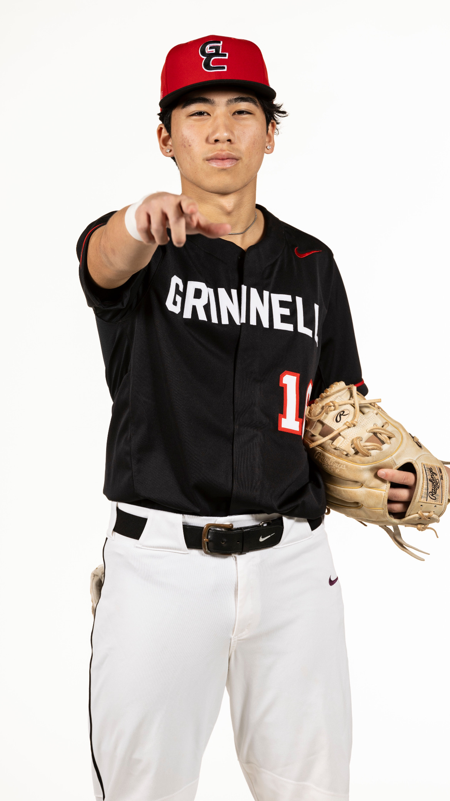
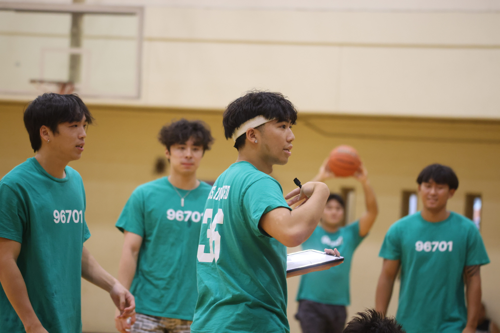
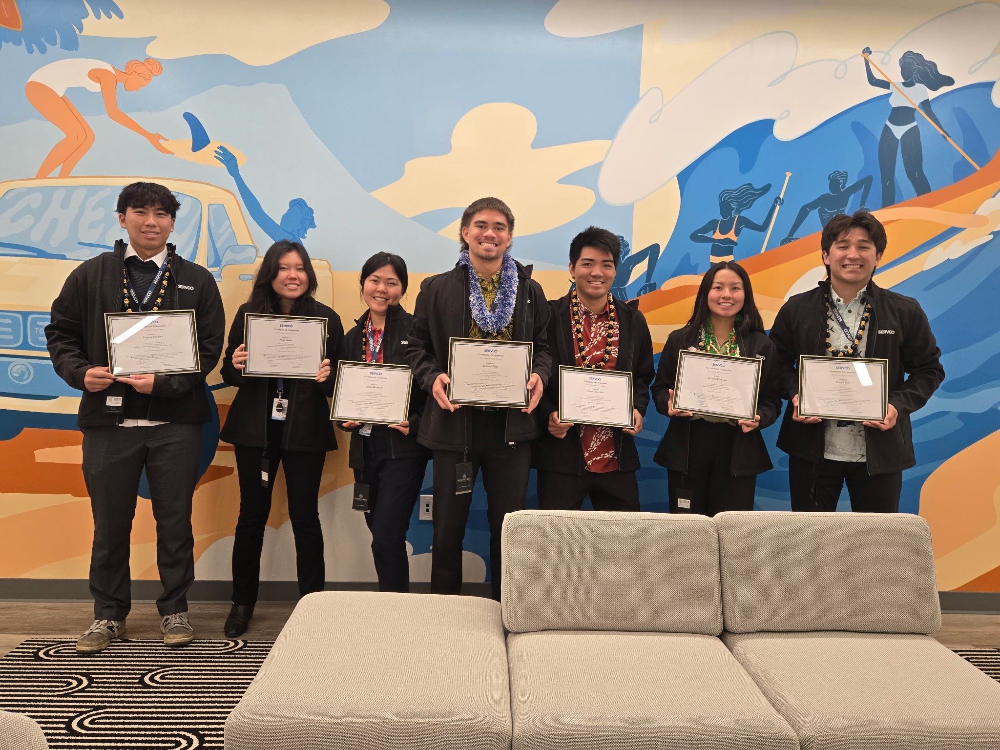

Aloha! My name is Preston Yoshino and I'm from Aiea, Hawaii. I'm currently a third-year student at Grinnell College double majoring in computer science and mathematics with a minor in statistics. Aside from my formal studies, I am passionate about graphic design, UI/UX design and content creation. I am also a middle infielder for Grinnell College baseball team.
After I finish my studies, I hope to pursue a career in software engineering, machine learning, or quantitative finance.
During my free time I enjoy going to the beach, playing basketball, and working as a server at a diner in my hometown.
8.12.2025 - I am currently finishing up my internship at Servco Pacific. I worked within the distribution department, creating end-to-end solutions that helped analyze parts data, automate manual workflows, and optimize internal user application experiences.
